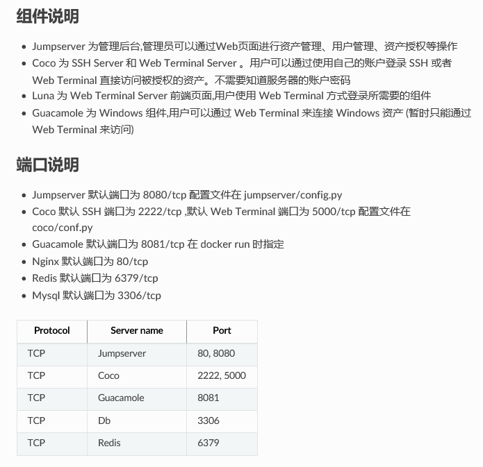

基础架构十五：两款运维操作工具
一、jumpserver
总体介绍
- 官方的名字叫保垒机或跳板机，其实就是能过WEB页面的方式来访问服务器，同时进行权限控制、操作记录、日志审计等，支持访问LINUX和WINDOWS主机
- 官方说明：http://docs.jumpserver.org/zh/docs/introduce.html
jumpserver各组件组成
-
coco
- 实现ssh和web Terminal，是jumpserver的子项目
- https://github.com/jumpserver/coco.git
-
nginx+gunicom+django的结构：
- gunicom:一个wsgi，把访问转发给后端的django主程序 https://www.cnblogs.com/xybaby/p/6296974.html
- 基于django编写的主程序，实现jumpserver的主要页面功能
-
Guacamole，简单来说是一个远程桌面连接的网关，不是一个独立的Web应用程序，而是由许多部件组成的。Web应用程序实际上是整个项目里最小最轻量的，大部分的功能依靠Guacamole的底层组件来完成。 guacd是核心 https://www.cnblogs.com/ji-yun/p/5657709.html

安装
- http://docs.jumpserver.org/zh/docs/quickinstall.html
- 直接使用docker启动：
docker run --name jms_all -d -p 80:80 -p 2222:2222 jumpserver/jms_all:latest- 容器内的启动脚本
- cat /usr/bin/entrypoint.sh
#!/bin/bash
#
export LANG=zh_CN.UTF-8
if [ $DB_HOST == 127.0.0.1 ]; then
mysqld_safe &
fi
if [ $REDIS_HOST == 127.0.0.1 ]; then
redis-server &
fi
source /opt/py3/bin/activate
cd /opt/jumpserver && ./jms start all -d
/usr/sbin/nginx &
/etc/init.d/guacd start
sh /config/tomcat8/bin/startup.sh
cd /opt/coco && ./cocod start -d
tail -f /opt/readme.txt
进程：
root 1 0.0 0.0 14968 3144 ? Ss 11:12 0:00 /bin/bash /usr/bin/entrypoint.sh
root 6 0.0 0.0 15108 3188 ? S 11:12 0:00 /bin/sh /usr/bin/mysqld_safe
root 7 0.3 0.1 42628 9256 ? Sl 11:12 0:00 redis-server *:6379
mysql 143 0.6 1.3 1197072 113256 ? Sl 11:12 0:00 /usr/libexec/mysqld --basedir=/usr --
root 183 0.0 0.0 15088 3508 pts/0 Ss 11:13 0:00 bash
root 209 0.0 0.2 125224 21180 ? S 11:13 0:00 /opt/py3/bin/python3.6 /opt/py3/bin/g
root 212 4.2 1.2 511700 103780 ? Sl 11:13 0:01 /opt/py3/bin/python3.6 /opt/py3/bin/g
root 213 4.0 1.2 659680 104356 ? Sl 11:13 0:01 /opt/py3/bin/python3.6 /opt/py3/bin/g
root 214 3.0 0.9 392160 80388 ? S 11:13 0:01 /opt/py3/bin/python3.6 /opt/py3/bin/g
root 215 4.3 1.3 971512 107584 ? Sl 11:13 0:01 /opt/py3/bin/python3.6 /opt/py3/bin/g
root 233 18.1 1.3 453676 112340 ? S 11:13 0:06 /opt/py3/bin/python3.6 -m celery work
root 234 15.3 1.2 446136 105848 ? S 11:13 0:05 /opt/py3/bin/python3.6 /opt/py3/bin/c
root 260 0.0 1.2 452384 98616 ? S 11:13 0:00 /opt/py3/bin/python3.6 -m celery work
root 261 0.0 1.2 452384 98668 ? S 11:13 0:00 /opt/py3/bin/python3.6 -m celery work
root 262 0.0 1.2 452384 98692 ? S 11:13 0:00 /opt/py3/bin/python3.6 -m celery work
root 263 0.0 1.2 452384 98632 ? S 11:13 0:00 /opt/py3/bin/python3.6 -m celery work
root 270 0.0 0.1 116376 12188 ? S 11:13 0:00 /usr/local/sbin/guacd -p /var/run/gua
root 281 37.6 2.2 4083864 184484 ? Sl 11:13 0:07 /usr/bin/java -Djava.util.logging.con
root 285 0.0 0.0 125020 2240 ? Ss 11:13 0:00 nginx: master process /usr/sbin/nginx
nginx 286 0.0 0.0 125452 7092 ? S 11:13 0:00 nginx: worker process
root 287 0.0 1.2 453676 100024 ? S 11:13 0:00 /opt/py3/bin/python3.6 -m celery work
root 317 0.1 0.6 256816 57160 ? S 11:13 0:00 python3 ./cocod start -d
root 322 0.0 0.0 7660 692 ? S 11:13 0:00 tail -f /opt/readme.txt
端口：
State Recv-Q Send-Q Local Address:Port Peer Address:Port
LISTEN 0 1 127.0.0.1:8005 *:* users:(("java",pid=281,fd=64))
LISTEN 0 50 *:5000 *:* users:(("python3",pid=317,fd=8))
LISTEN 0 100 *:8009 *:* users:(("java",pid=281,fd=52))
LISTEN 0 50 *:3306 *:*
LISTEN 0 128 *:6379 *:* users:(("redis-server",pid=7,fd=5))
LISTEN 0 5 *:2222 *:* users:(("python3",pid=317,fd=7))
LISTEN 0 128 *:80 *:* users:(("nginx",pid=285,fd=6))
LISTEN 0 128 *:8080 *:* users:(("gunicorn",pid=215,fd=6),("gunicorn",pid=214,fd=6),("gunicorn",pid=213,fd=6),("gunicorn",pid=212,fd=6),("gunicorn",pid=209,fd=6))
LISTEN 0 100 *:8081 *:* users:(("java",pid=281,fd=47))
LISTEN 0 5 127.0.0.1:4822 *:* users:(("guacd",pid=270,fd=3))
LISTEN 0 128 :::6379 :::* users:(("redis-server",pid=7,fd=4))
LISTEN 0 128 :::80 :::* users:(("nginx",pid=285,fd=7))

web登陆：默认admin/admin
功能 ：
-
支持webTerminal连接Linux和Windows系统

-
输入的每条命令都会实记录，审计功能强大
-
批量处理任务比较弱，只提供一个命令执行界面：

二、awx
主页：https://github.com/ansible/awx
- 有商业版本tower
- 是ansible的web版
- 无中文界面
- 详细文档只有tower商业版的：https://docs.ansible.com/ansible-tower/latest/html/administration/index.html
安装：可以装到k8s里， 我用的centos7+docker来安装：
- https://github.com/ansible/awx/blob/devel/INSTALL.md
- 需要docker-py、docker-compose包，只是这里注意要安装1.9版本的compose, 因为2.0以上会安装docker包，与docker-py冲突, ansible-playbook安装时会报错，无法引用docker-py：
pip install docker-py;
pip install docker-compose==1.9.0
- 先clone一份：
git clone <https://github.com/ansible/awx.git> cd awx/installer; ansible-playbook -i inventory install.yml- web登陆：默认admin/password
使用：配置好用户、inventory、project -》job--》playbook-》执行
-
需要一个版本控制系统来存放playbook，在新建project时添加，我用内部的gitlab:

-
templates里设置job,关联到project/user/inventory,选择对应的playbook（需要先写好传到gitlab）

-
执行的效果：

功能：
-
没有审计、webTerminal等功能
-
批量任务执行功能强，只需编写playbook，设置好执行的user/inventory/即可
自行开发？
-
大点的公司都会有自己的运维执行平台，以提高生产效率，小公司的话搞个开源的直接用比较合算
-
这里有个运维管理的框架： https://github.com/Thomas-YangHT/OPMS_v3
-
自己开发就离不开CMDB，其中一部分是资产管理信息，另一部分是软资源信息：

-
三条命令搞定ansible批量执行，好处是可以用上以前编写的各种SHELL脚本，不必再用playbook的yml语法重新组织逻辑：
- 将test.sh拷贝到hosts.sel包括的所有主机
sudo -u root ansible -i /root/hosts.sel all -m copy -a 'src=/root/test.sh dest=~/test.sh mode=755' >/root/test1.log - 执行每台主机上的 test.sh
sudo -u root ansible -i /root/hosts.sel all -m shell -a './test.sh >test.log' >/root/test2.log - 将每台服务器上的执行结果日志test.log取回放在/root/fetchd目录下以IP为名的子目录里
sudo -u root ansible -i /root/hosts.sel all -m fetch -a 'src=~/test.log dest=/root/fetchd' >/root/test3.log
- 将test.sh拷贝到hosts.sel包括的所有主机
-
比较喜欢fabric1的简捷，即使目标主机上没有python环境也可以（比如CoreOS）：
#!/usr/bin/python
from fabric.api import *
def upload():
put('/root/collect.sh','/root/')
def executeit():
run('sh collect.sh')
- 容器时代k8s 容器时代似乎所有的问题都可以在K8S里找到答案：
- 监控由zabbix转为prometheus+grafana
- 日志分析用EFK
- 前端负载转发用KONG、ingress
- 运维操作可以编写一个yaml文件搞定，轻松完成以前很难完成的任务。